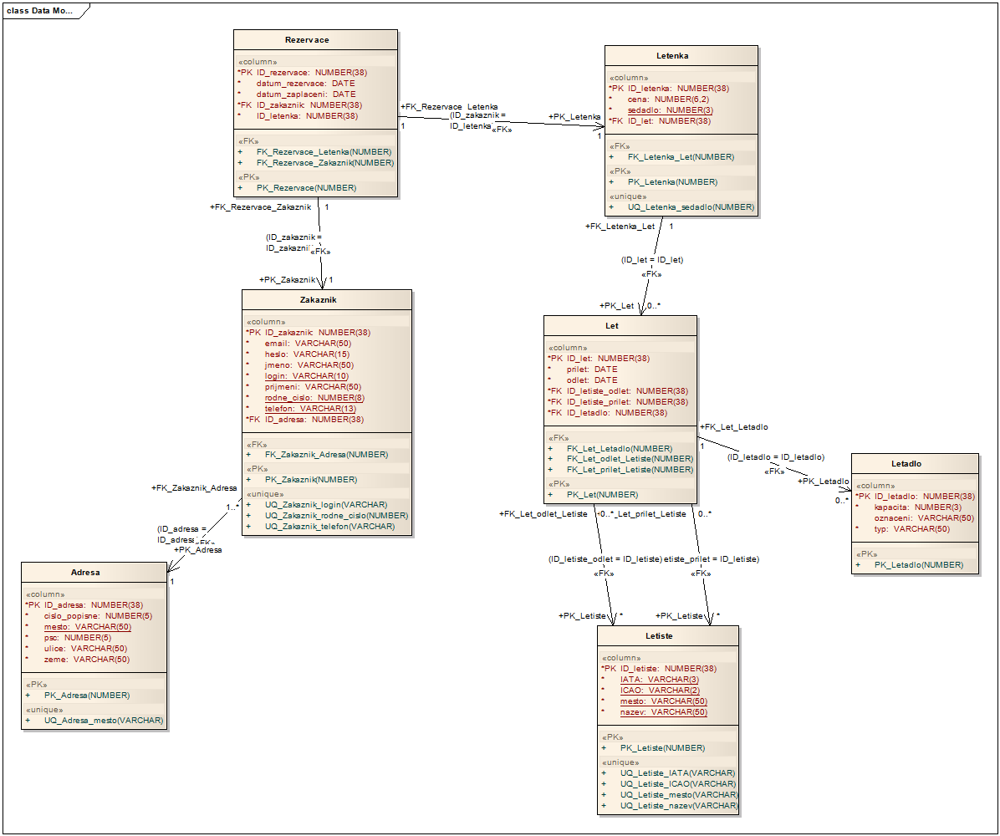

Letiště - projekt DORDB
Autor: Martin Jedlička
Na celém projektu jsem pracoval samostatně.
Poznámka vyučujícího:
Toto je pouze ukázka, jak může vypadat odevzdaný projekt. Nejedná se o příkladně zpracovanou práci, viz výtky níže:
- Alternativní verze dotazu pro srovnáná exekučních plánů byla vyzkoušena pouze u jednoho dotazu.
- Příliš triviální aplikační logika (očekáván víc než jeden příkaz uvnitř procedury).
- Aktualizace odvozeného sloupce pomocí +-1 není transakčně bezpečná.
- Popis datového skladu neopovídá obvyklému využití - typický dat. sklad slouží k dotazům vedoucím na agregovaná data (např. počty letů z jednotlivých letišť v jednotlivých měsících), ne jenom "nej" údaje z dimenzí.
1. E-R diagram

2. Slovní popis dodatečných integritních omezení
2.1. Triviální integritiní omezení
- Tabulka Letadlo
- Atribut kapacita nesmí být záporné a nulové číslo.
- Atribut oznacení musí být unikátní - zajištěno unikátním klíčem, pro jednoznačné určení letadla.
- Tabulka Letenka
- Atribut cena nesmí být záporné a nulové číslo.
- Atribut sedadlo nesmí být záporné.
- Tabulka Rezervace
- Atribut Datum_rezervace <= datum_zaplaceni.
- Tabulka Adresa
- Atribut cislo_popisne nesmí být záporné a nulové číslo.
- Tabulka Let
- Atribut prilet >= odlet.
- Atribut misto odletu a priletu musí být různé.
- Tabulka Letiste
- Atributy město a název letiště musí být unikátní - zajištěno unikátním klíčem, pro jasné určení destinace.
- Atributy IATO a ICAO musí být unikátní - zajištěno unikátním klíčem
- Zakaznik
- Atribut telefon musí být unikátní - zajištěno unikátním klíčem.
- Atribut rod_cislo musí být nenulový a nezáporný a musí být unikátní - zajištěno unikátním klíčem.
- Atribut login musí být nenulový řetěz a musí být unikátní - zajištěno unikátním klíčem.
2.1. Netriviální integritní omezení
- Tabulka Letenka
- Letenek k určitému letu nesmí být nabídnuto více, než je kapacita příslušného letadla.
3. Slovní návrh API rozhraní „business logiky“
Zaregistrování zakazníka
Název: registrace_zakaznika
Parametry: email, heslo, jmeno, login, prijmeni,rodne_cislo,telefon
Popis: Pocedura vytvoří nový záznam v tabulce Zákazník. Zákazníka sváže s adresou v databázi.
Vytoření letu
Název: vytvor_let
Parametry: prilet, odlet, ID_letiste_odlet, ID_letiste_prilet, ID_letadlo
Popis: procedura vytvoří let z určitého letiště do určité destinace se zvoleným datumem odletu a příletu a se zvoleným letadlem.
4. Pět slovně formulovaných dotazů nad schématem
- seznam všech letadel na daném letišti k určitému datumu
- zjištění všech letů ( letenek) pro daného zákazníka (ID_zakaznika)
- vypsání volných míst (počet) pro daný let
- seznam ( jméno, příjmení, město, ulice, číslo popisné) všech zákazníků kteří letím daným letem
- Vypsani všech letadel a seřazení podle počtu absolvovaných letů
5. Skript, který vytvoří databázové schéma odpovídající E-R diagramu
Skript: 05_db_schema.txt
6. Skript, který vytvoří v databázovém schématu dodatečná integritní omezení
Skript: 06_integritni_omezeni_z_bodu_2.txt
7. Skript, který naplní tabulky testovacími daty
Skript: 07_testovaci_data.txt
8. Skript, který provede postupně všechny navržené dotazy z bodu 4
Skript: 08_dotazy_z_bodu_4.txt
Výsledky: 08_vysledky_dotazu.txt
Porovnání: 08_porovnani.txt
9. Skript, který se pokusí porušit všechna dodatečná integritní omezení
Skript: 09_poruseni_omezeni.txt
Výstup: 09_vystup.txt
10. Skript pro vytvoření balíku (package) a procedur „business logiky“
Skript: 10_balik_a_procedury
11. Ověření procedur „business logiky“
Skript: 11_testovaci_skript_procedur.txt
Výstupy: 11_vystup.txt
12. Skript, který doplní do tabulky Zakaznik automaticky dopočítávaný sloupec
Skript: 12_odvozene_hodnoty.txt
13. Skript, který vytvoří úložiště ještě jednou v „objektové“ podobě
Skript: 13_objektova_podoba.txt
14. Skript, který provede pět dotazů znovu, nad objektovými tabulkami
Skript: 14_objektove_dotazy_z_bodu_4.txt
Výstup: 14_vystup.txt
15. Navrhněte slovně fakta a dimenze pro datový sklad
Tabulka faktů: Let
Tabulka dimenzí: Letadlo, letiste, letenka, zakaznik
Možné analýzy: Které letadlo nejčasteji létá. Které letiště nejvíc odbavilo letů. Pro jaký let bylo prodáno nejvíc letenek. Jaký zákazník nejčasteji létá.
Skript pro vyčištění databáze
Skript: drop.txt
{kind=link}